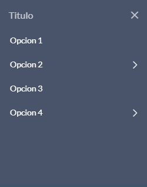
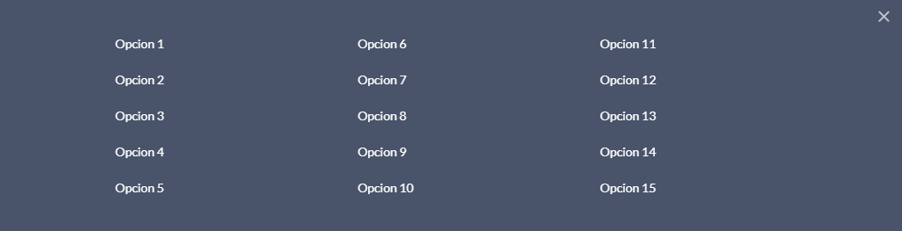
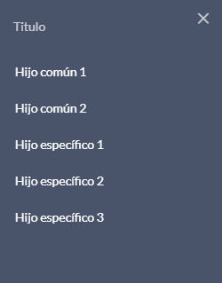

2 Módulos comunes
Son aquellos que se utlizan más frecuentemente en las páginas, como por ejemplo los módulos estructurales de cabecera, pie, etc.
2.1 Cabecera
Esta cabecera consta de cuatro partes dentro del tag header:
- Título del portal
- Menú horizontal(secundario).
- Menú principal, el cual se colorea de azul cuando está activo
- Buscador, que consta de un input y un botón (lupa), donde se escribe lo que se desee buscar
No hay que olvidar que esta web esta hecha con responsive, con lo que los menús (principal y secundario) que hay en desktop no es el mismo(en html) que en versión movil.
En el html aparece un div con las clases row small_icons cuando el tamaño de la pantalla se corresponde al de una tablet o móvil.
<header class="header" id="top">
<div class="container-title">
<div class="brand">
<div class="row">
<div class="col-md-6 titulo pl-3">
<h1><a class="" title="Intranet Ayuntamiento de Madrid" href="#">Intranet Ayuntamiento de Madrid</a></h1>
</div>
<div class="col-md-6 text-right pt-4">
<a href="#" accesskey="I"><img src="img/logo_madrid_cabecera.png" alt="Logo Madrid"></a>
</div>
</div>
</div>
</div>
<div class="menu_secundario">
<div class="container">
<div class="row m-0">
<div class="col-lg-1 col-xl-1 ayre-logo above pl-3">
<a class="header_logo" title="" href="#">
<img class="logo_ayre" src="img/ayre_logo.png" alt="Logo Ayre">
</a>
</div>
<div class="col-12 col-lg-11 col-xl-11 options" style="position:relative;">
<ul class="nav justify-content-end">
<li class="nav-item">
<a class="nav-link" href="#">Mis aplicaciones</a>
</li>
<li class="nav-item">
<a class="nav-link" href="#">Directorio</a>
</li>
<li class="nav-item">
<a class="nav-link" href="#">Favoritos</a>
</li>
<li class="nav-item">
<a class="nav-link" href="#">Ayuda</a>
</li>
<li class="nav-item">
<a class="nav-link" href="#">Contacta</a>
</li>
<li class="nav-item">
<a class="nav-link" href="#">Desconectar</a>
</li>
</ul>
</div>
</div>
</div>
</div>
<div class="main_menu">
<div class="desktop_menu pl-3 col-9">
<ul>
<li class="no_bullet">
<a title="Ayuntamiento" href="#">Ayuntamiento</a>
</li>
<li class="no_bullet">
<a title="Áreas de actividad" href="#" class="">Áreas de actividad</a>
</li>
<li class="no_bullet">
<a title="Mi área personal" href="#" class="">Mi área personal</a>
</li>
</ul>
</div>
<div class="desktop-search col-3">
<input type="text" placeholder="buscar">
<button type="button" class="btn"><i class="icon-Search-icon"></i></button>
</div>
</div>
</header>2.2 Navegación
Para navegar por la web sin contar el footer, los módulos de que se disponen son:
- Menú Principal
- Menú Horizontal
- Menú Vertical
- Miga de pan
Menú Principal
Está contenido en la clase main_menu y dividido en 2 áreas, una contenida en la clase desktop_menu con la lista con las secciones y otra contenida en la clase desktop-search con el buscador.
Menú Horizontal
Está contenido en la lista con los estilos nav justify-content-end, donde cada elemento tiene el estilo nav-item, y estos estan formados de un enlace con la clase nav-link

Menús Verticales
Hay tres tipos de menú vertical
Dos de ellos pertenecen al menú principal, al principio estan ocultos y para que se muestren hay que seleccionar una de las opciones del menú principal.
- El primero pertenece al menú principal, al principio esta oculto y para que se muestren hay que seleccionar una de las opciones del menú principal.
Aparece desde la izquierda de la pantalla.
Hay que ponerle las clases has_children left_menu al padre e incluir una lista con los elementos que queramos que aparezcan en el menú
Si queremos que el menú tenga varios niveles de navegación, habrá que incluir la clase has_children y un listado con las opciones al elemento padre del que queramos que aparezca el segundo nivel

- El segundo también pertenece al menú principal, al principio esta oculto y para que se muestren hay que seleccionar una de las opciones del menú principal.
Aparece en el centro de la pantalla
Hay que ponerle las clases has_children center_menu al padre e incluir una lista con los elementos que queramos que aparezcan en el menú
Si queremos que el menú tenga varios niveles de navegación, habra que incluir la clase has_children y un listado con las opciones al elemento padre, una vez hecho esto, a este elemento se le dibujará una flecha indicando que tiene hijos.

- El tercero es un menú vertical que aparece cuando se pincha sobre el icono de menú
 que aparece en las páginas de segundo nivel
que aparece en las páginas de segundo nivel
Aparece desde la izquierda de la pantalla.
Hay que ponerle la clase boton_menu a la capa contenedora e incluir una lista con los elementos que queramos que aparezcan en el menú
Este menú se puede hacer que aparezca automáticamente cuando carga la pantalla, para hacer eso solo hay que incluir la clase automatico a la capa contenedora

Miga de pan
Indica la ubicación de la página actual dentro de una jerarquía de navegación que agrega automáticamente separadores a través de CSS.
El rastro de migas proporciona una navegación, es una buena idea agregar una etiqueta significativa como aria-label = "breadcrumb" para describir el tipo de navegación proporcionada en el elemento nav, así como aplicar un aria-current = "page" hasta el último elemento del conjunto para indicar que representa la página actual.
2.3 Pie de página
El pie de la página consta de 2 secciones dentro de la etiqueta footer:
- Navegación de las secciones principales del Ayuntamiento de Madrid, el cual incluye las herramientas principales.
- Cierre visual de la página con acceso de información general de Aviso Legal.
<footer class="footer">
<div class="links">
<div class="footer_content_xl">
<img src="img/escudo_madrid.png" alt="escudo del ayuntamiento de Madrid">
<ul>
<li><a href="#" accesskey="M">Mapa web</a></li>
<li><a href="#" accesskey="P">Soporte técnico</a></li>
<li><a href="#" accesskey="L">Preguntas frecuentes</a></li>
<li><a href="#">Ayuda</a></li>
<li><a href="#" target="_blank" title="ventana nueva" class="ventanaEmergente formatowidth_800-height_600-menubar_no-location_no-scrollbars_yes-status_yes">Directorio</a></li>
</ul>
</div>
</div>
<div class="copyright" id="bottom">
<div class="footer_content_xl">
<ul>
<li class="footer_title">Ayuntamiento de Madrid 2019</li>
<li class="text">Copyright 2019. Reservados todos los derechos</li>
<li><a href="#">Aviso Legal</a></li>
</ul>
</div>
</div>
</footer>2.4 Encabezados
Todos los bloques de los encabezados, admiten un div con la clase imagen_titulo donde esté la imagen que se quiere poner, si no lleva esta capa o esta imagen, la cabecera aparecerá sin imagen

Hay varios tipos de encabezados
Encabezado de la Home
Esta cabecera se compone de una imagen de fondo y un bloque novedades donde se pueden incluir dos enlaces.
Novedades
Novedades
Encabezado con imagen de fondo y una banda azul
Esta cabecera se compone de una imagen de fondo y de una banda azul donde va el texto de color blanco
Titulo del contenido
Titulo del contenido

Encabezado detalle de contenido
Hay dos tipos de encabezados de detalle de contenido.
- Distributivas:
Esta cabecera se compone de una imagen de fondo y de un bloque azul donde va el texto de color blanco
Titulo del contenido
12/12/2012
Titulo del contenido
12/12/2012

- Detalles:
Estos encabezados se componen de un fondo gris, de un título de color blanco y de una fecha de color naranja.
Titulo del contenido
12/12/2012
Titulo del contenido
12/12/2012
Encabezado pantallas de tercer nivel
Estos encabezados pueden tener o no tener imagen de fondo
- Encabezado con imagen de fondo: en estos casos se debe poner la clase big al encabezado para hacerlo más grande y que se vea mejor
Titulo del contenido
Titulo del contenido
- Encabezado sin imagen de fondo
Titulo del contenido
Titulo del contenido
2.5 Paginación
Después de hacer una busqueda, si el resultado no entra en una sola página, se usa la paginación.
Se compone de una capa div con la clase table-pagination, en la que se incluye un texto y un listado con el número de páginas.
El listado de números de páginas se compone de un elemento nav con la etiqueta aria que la define numeros de paginas en el que se incluye el listado con la clase pagination
- Concurso de méritos
- Page 1 of 5
<div class="table-pagination">
<div class="row">
<div class="col-xs-12 col-md-6 col-lg-6 col-xl-6">
<ul>
<li class="results_text"><span class="results_text">Concurso de méritos</span></li>
<li class="results"><span class="results">Page 1 of 5</span></li>
</ul>
</div>
<div class="col-xs-12 col-md-6 col-lg-6 col-xl-6">
<nav aria-label="numeros de paginas">
<ul class="pagination justify-content-center justify-content-md-end">
<li class="page-item">
<a class="page-link" href="#" aria-label="Previous">
<span aria-hidden="true"><i class="icon-arrow-left"></i></span>
<span class="sr-only">Previous</span>
</a>
</li>
<li class="page-item active"><a class="page-link" href="#">1</a></li>
<li class="page-item"><a class="page-link" href="#">2</a></li>
<li class="page-item"><a class="page-link" href="#">3</a></li>
<li class="page-item">
<a class="page-link" href="#" aria-label="Next">
<span aria-hidden="true"><i class="icon-arrow-right"></i></span>
<span class="sr-only">Next</span>
</a>
</li>
</ul>
</nav>
</div>
</div>
</div>2.6 Filtro de búsqueda
Después de hacer una búsqueda, se pueden filtrar los resultados.
El bloque de filtro de búsqueda es un formulario con varios elementos, se puede construir con cualquier elemento, al igual que se le puede dar el tamaño que se quiera a cada uno de los elementos usando las clases de bootstrap.
Al pinchar sobre el icono de calendario, se mostrará un calendario para poder seleccionar la fecha deseada.
<div class="table-pagination">
<form>
<div class="form-row">
<div class="form-group col-md-2 col-lg-2 text-xs-left">
<p>Filtrar por:</p>
</div>
<div class="form-group col-md-2 col-lg-2">
<div class="custom-select"><select class="form-control simple" id="Tema" placeholder="Tema">
<option value="">Tema</option>
<option>1</option>
<option>2</option>
<option>3</option>
<option>4</option>
<option>5</option>
</select><span class="custom-select__arrow" aria-hidden="true"><span class="icon-arrow-full-down"></span></span></div>
</div>
<div class="form-group col-md-2 col-lg-2">
<div class="custom-select"><select class="form-control simple" id="Distrito" placeholder="Distrito">
<option value="">Distrito</option>
<option>1</option>
<option>2</option>
<option>3</option>
<option>4</option>
<option>5</option>
</select><span class="custom-select__arrow" aria-hidden="true"><span class="icon-arrow-full-down"></span></span></div>
</div>
<div class="col-md-2 col-lg-2">
<div class="form-group">
<input type="text" id="from" class="from hasDatepicker" name="from" placeholder="Desde"><img class="ui-datepicker-trigger" src="img/calendar.png" alt="..." title="...">
</div>
</div>
<div class="col-md-2 col-lg-2">
<div class="form-group">
<input type="text" id="to" class="to hasDatepicker" name="to" placeholder="Hasta"><img class="ui-datepicker-trigger" src="img/calendar.png" alt="..." title="...">
</div>
</div>
<div class="col-md-2 col-lg-2 ">
<button type="submit" class="btn btn-success btn-block">Filtrar</button>
</div>
</div>
</form>
<hr>
<form>
<div class="form-row">
<div class="form-group col-md-2 col-lg-2 text-xs-left">
<p>Filtrar por:</p>
</div>
<div class="form-group col-md-4 col-lg-4">
<div class="custom-select"><select class="form-control simple" id="options" placeholder="options">
<option value="">Seleccione una opción</option>
<option>1</option>
<option>2</option>
<option>3</option>
<option>4</option>
<option>5</option>
</select><span class="custom-select__arrow" aria-hidden="true"><span class="icon-arrow-full-down"></span></span></div>
</div>
<div class="col-md-4 col-lg-4">
<div class="form-group">
<input type="text" class="calendar hasDatepicker" name="calendar" placeholder="Fecha" id="dp1553073232712"><img class="ui-datepicker-trigger" src="img/calendar.png" alt="..." title="...">
</div>
</div>
<div class="col-md-2 col-lg-2 ">
<button type="submit" class="btn btn-success btn-block">Filtrar</button>
</div>
</div>
</form>
</div>2.7 Bloque destacados
Bloque que se utiliza para poner enlaces a otros sitios de la intranet
<div class="destacados">
<div class="container">
<div class="row">
<div class="col-sm-12 col-md-12 pl-sm-0 pr-sm-0">
<div class="list-group">
<div class="header_destacados">
<h3>Destacados</h3>
</div>
<a href="#" title="BOAM" class="list-group-item boam">
<img class="boam_icon" src="img/boam_icon.png" alt="BOAM">
<span class="text">BOAM</span>
<i class="icon-arrow-right"></i>
</a>
<a href="#" title="Organigramas" class="list-group-item"><span class="text">Organigramas</span><i class="icon-arrow-right"></i></a>
<a href="#" title="Soporte informático" class="list-group-item"><span class="text">Soporte informático</span><i class="icon-arrow-right"></i></a>
<a href="#" title="Plan de Gobierno" class="list-group-item"><span class="text">Plan de Gobierno</span><i class="icon-arrow-right"></i></a>
<a href="#" title="El tiempo" class="list-group-item"><span class="text">El tiempo</span><i class="icon-arrow-right"></i></a>
<a href="#" title="Ejemplo de literal largo que ocupa dos lineas" class="list-group-item"><span class="text">Ejemplo de literal largo que ocupa dos lineas</span><i class="icon-arrow-right"></i></a>
</div>
</div>
</div>
</div>
</div>2.8 Bloques derecha
Bloque que se utiliza para poner contenidos o sitios relacionados con el contenido
El título puede llevar tres iconos:
- Icono documentos relacionados
- Icono calendario
- Icono panel general
Documentos
Documentacion asociada
Documento de requisitos con titulo muy largo que opcupa por ejemplo dos líneas pdf141kb
Documento de requisitos con titulo muy largo que opcupa por ejemplo dos líneas pdf141kb
<div class="bloque_derecha">
<div class="container">
<div class="row">
<div class="col-sm-12 col-md-12">
<div class="list-group">
<div class="header_bloque_derecha">
<h4><i class="ico icon-documents"></i> Documentos</h4>
</div>
<div class="group">
<h5>Documentacion asociada</h5>
<p><a href="#" title="Organigramas">Documento de requisitos con titulo muy largo que opcupa por ejemplo dos líneas</a> <span class="pdf">pdf</span><span class="txt_pdf">141kb</span></p>
<p><a href="#" title="Organigramas">Documento de requisitos con titulo muy largo que opcupa por ejemplo dos líneas</a> <span class="pdf">pdf</span><span class="txt_pdf">141kb</span></p>
</div>
<div class="group">
<h5>Información relacionada</h5>
<h6>Lugar de celebración</h6>
<p><a href="#" title="Organigramas">Enlace a contenido</a></p>
<p><a href="#" title="Organigramas">Enlace a contenido</a></p>
</div>
<div class="group">
<h5>Otros sitios de interés</h5>
<p><a href="#" title="Organigramas">Enlace a contenido</a></p>
<p><a href="#" title="Organigramas">Enlace a contenido</a></p>
</div>
</div>
</div>
</div>
</div>
</div>